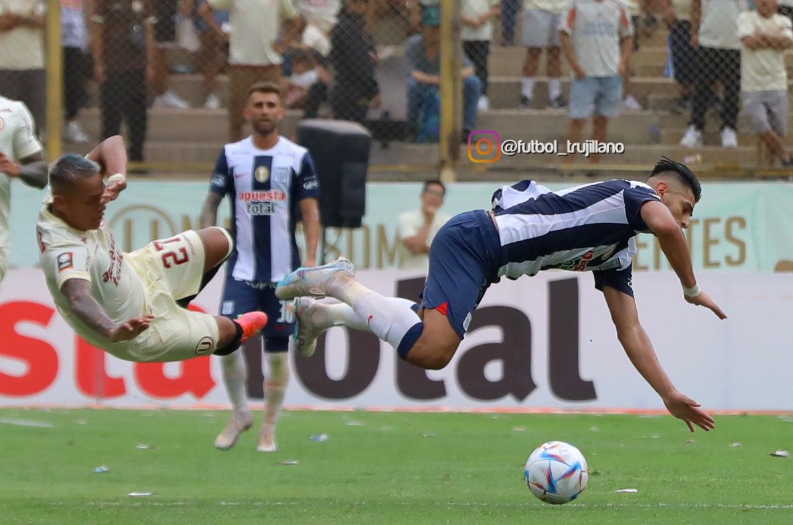

El clásico del fútbol peruano enfrenta a dos de los clubes más grandes y populares del país: Alianza Lima y Universitario de Deportes. Esta rivalidad ha marcado la historia del fútbol nacional por más de 90 años, generando emociones, alegrías y tristezas para millones de hinchas en todo el país.
El primer enfrentamiento oficial entre Alianza Lima y Universitario se jugó el 23 de septiembre de 1928, terminando en una victoria para la "U" por 1-0. Desde entonces, los clásicos se convirtieron en los partidos más esperados de cada temporada. La rivalidad se intensificó con el paso de los años, influenciada por el contexto social, político y cultural de Lima.
La Trinchera Norte, barra oficial de Universitario, y el Comando Sur, de Alianza Lima, son conocidas por su pasión incondicional y su constante presencia en los estadios. A pesar de los conflictos que han existido entre ambos bandos, también han protagonizado muestras de aliento y fidelidad que reflejan el amor por sus colores.
Uno de los clásicos más recordados se dio en el 2000, cuando Universitario ganó 4-1 en Matute, en un partido que sigue siendo celebrado por los hinchas cremas. Por otro lado, Alianza Lima se llevó una victoria inolvidable en 1995, al ganar 6-3 en el Nacional, demostrando su poder ofensivo. Estos encuentros han definido campeonatos y han sido el escenario de consagraciones y frustraciones.
Universitario de Deportes ha ganado 26 títulos nacionales, mientras que Alianza Lima ha conseguido 25 hasta la fecha. En clásicos, la balanza ha estado pareja, con una ligera ventaja para Universitario en cantidad de victorias. A lo largo de los años, ambos clubes han aportado una gran cantidad de jugadores a la selección peruana, reforzando su importancia en el fútbol nacional.
En Alianza Lima, nombres como Teófilo Cubillas, César Cueto, Waldir Sáenz y Paolo Guerrero son sinónimo de grandeza. En Universitario, destacan Lolo Fernández, Héctor Chumpitaz, José Luis Carranza y Juan Manuel Vargas. Estos ídolos marcaron época y dejaron una huella imborrable en los corazones de los hinchas.
Más que un simple partido, el Alianza Lima vs Universitario representa una lucha de identidades, tradiciones y pasión. Es el corazón del fútbol peruano, y cada enfrentamiento escribe un nuevo capítulo en esta historia de rivalidad eterna. A pesar de las diferencias, ambos clubes son pilares del deporte nacional y símbolos de orgullo para millones de peruanos.
